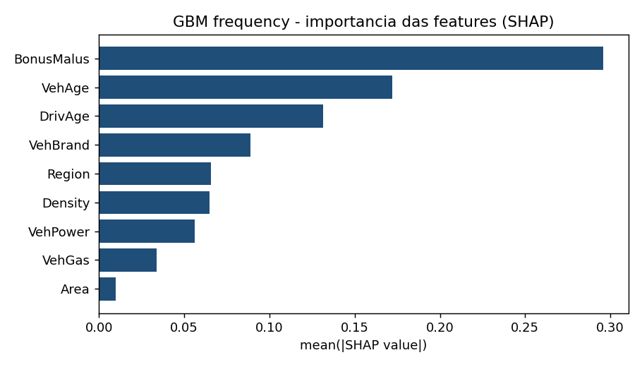
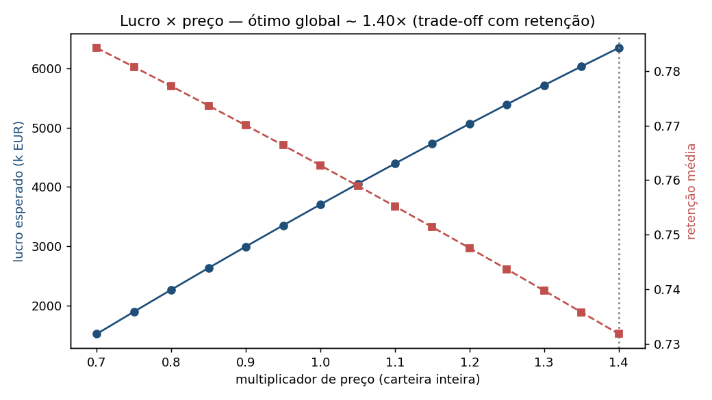

Esta página é um guia visual do projeto: você vai entender o negócio, o que é frequência e severidade, como um GLM e um GBM funcionam, o que o SHAP explica e como o custo vira preço. Tudo com os resultados reais do nosso motor de pricing.
Seguro é transferência de risco. O cliente paga um valor pequeno e certo (o prêmio) e a seguradora assume um prejuízo grande e incerto (o sinistro). A maioria nunca aciona, alguns acionam, e o prêmio de todos paga os sinistros de poucos. Isso se chama mutualização.
Uma fábrica sabe o custo antes de vender. A seguradora vende primeiro e só descobre o custo depois, quando o sinistro acontece. Precificar é estimar um custo que ainda não existe, e por isso o seguro é, no fundo, estatística aplicada.
Combined ratio = sinistros sobre prêmios (loss ratio) mais despesas sobre prêmios (expense ratio). Abaixo de 100% há lucro técnico, acima há prejuízo. Poucos pontos percentuais separam um ano excelente de um desastre, e o que mais mexe nesse número é o preço.
Se você cobra o mesmo de todos, o bom motorista (que paga caro pelo risco que não tem) migra para o concorrente mais barato, e o mau motorista fica. A carteira apodrece. O preço precisa refletir o risco de cada perfil.
Subir o preço aumenta a margem, mas afasta clientes. Esse equilíbrio entre lucro e retenção é a parte comercial do pricing, e exige estimar a sensibilidade da demanda ao preço (a elasticidade). Voltamos a ela no Capítulo 6.
O custo esperado de sinistros se decompõe em duas perguntas independentes: com que frequência a pessoa sinistra, e quanto custa cada sinistro. Multiplicando as duas, chega-se ao prêmio puro (o piso do preço, antes de despesas, margem e impostos).
Quantos sinistros por ano aquele perfil tende a ter. É um evento raro: a maioria das apólices tem zero. Por isso modelamos com a distribuição de Poisson, e usamos a exposição (fração do ano coberta) como base de comparação justa.
Quando há sinistro, quanto custa em média. O custo é positivo e tem cauda pesada (poucos sinistros muito caros), então usamos a distribuição Gamma. O prêmio puro inteiro também pode ser modelado de uma vez com a Tweedie.
Separar é melhor porque os fatores que mudam a frequência (idade, bônus-malus) são diferentes dos que mudam a severidade (valor do veículo). E há duas coisas que todo modelo de pricing precisa acertar: a calibração (o nível total, para o caixa fechar) e a discriminação (ranquear bom e mau risco). Por isso usamos métricas como deviance e Gini, não a acurácia genérica.
Cada apólice traz informações do condutor, do veículo e da região. São elas que o modelo usa para estimar o risco de cada perfil.
| Variável | O que é | Como entra no modelo |
|---|---|---|
| BonusMalus | Índice de 50 a 230. Abaixo de 100 é bônus (bom histórico), acima é malus (sinistrou). | O sinal de risco individual mais forte em auto. Concentra a sinistralidade da pessoa. |
| DrivAge | Idade do condutor principal. | Jovens têm frequência bem maior (curva em U com a idade). Driver de peso. |
| VehAge | Idade do veículo, em anos. | Veículos novos e velhos têm padrões distintos. Efeito não linear, bem captado pelo GBM. |
| VehPower | Potência do veículo (categoria). | Mais potência tende a mais frequência. Cada nível tem sua relatividade. |
| Density | Densidade populacional da região (hab/km²). | Áreas urbanas têm mais trânsito e exposição, logo mais sinistros. |
| VehBrand | Marca do veículo (B1 a B14, anonimizadas). | Proxy do tipo de carro e do perfil de quem o dirige. |
| VehGas | Combustível: Diesel ou Regular. | Diesel costuma indicar maior quilometragem anual, logo mais exposição. |
| Area | Código de área (A a F) por densidade urbana. | Resumo geográfico de urbanização, correlacionado com a frequência. |
| Region | Região da França (R11 a R94). | Captura diferenças geográficas (tráfego, clima, roubo) que as outras não pegam. |
O GLM (Modelo Linear Generalizado) é o padrão atuarial. Com o link logarítmico, a frequência prevista vira um produto: uma base da carteira multiplicada pela relatividade de cada variável. Cada fator acima de 1 encarece, abaixo de 1 barateia. É isso que torna o GLM auditável, algo que um regulador exige.
O GBM (gradient boosting, um conjunto de árvores) é mais preciso porque captura não linearidades e interações que o GLM linear achata. O custo é a opacidade. O SHAP abre essa caixa-preta e mostra, para cada previsão, quanto cada variável empurrou o risco para cima ou para baixo.
Na frequência, o GBM reduz a deviance 5,15% além do GLM. Ele aproveita curvaturas (como a idade) que o modelo linear não representa bem.
O SHAP mostra que o GBM se apoia nos mesmos drivers coerentes do GLM (bônus-malus, idade). O ganho é confiável, não um truque sobre ruído.

Este cálculo roda inteiro no seu navegador, com os coeficientes reais do nosso GLM (não há servidor por trás). Ajuste o perfil e veja o prêmio puro e a decomposição se atualizarem na hora.
Base da carteira multiplicada pela relatividade de cada variável: acima de 1 encarece, abaixo de 1 barateia.
O prêmio puro é o custo. O preço ótimo equilibra lucro e retenção: para cada apólice, escolhemos o preço que maximiza o lucro esperado, igual a probabilidade de renovar vezes a margem (preço menos custo). Isso exige um modelo de retenção que aprenda como o cliente reage ao preço.

Um modelo só vira produto com engenharia em volta. O projeto trata todas as etapas, do código testado ao monitoramento em produção.
Testes e CI. Suíte com pytest e lint com ruff, rodando a cada push via GitHub Actions.
Monitoramento de drift. O PSI compara as distribuições entre períodos e dispara alerta quando o mundo muda. Na base, 2016 e 2017 ficaram estáveis.
Rastreio de experimentos. O MLflow registra parâmetros, métricas e modelos para comparar GLM e GBM de forma reprodutível.
Container. Um Dockerfile empacota a aplicação para rodar igual em qualquer lugar.
O código, os notebooks e a documentação estão no repositório. Há também uma aplicação interativa (Flask) que calcula o prêmio de um perfil e mostra a decomposição do GLM e a explicação SHAP, para rodar localmente.
git clone https://github.com/MatPasquali/Insurance_Pricing_Engine && cd Insurance_Pricing_Engine && pip install -r requirements.txt && python webapp/app.py